The plot above shows the trend of the possible area coverage in 40 minutes over a day. The starting stop is North Lake & University, which is within the UW Campus. As can be seen in the figure, there are noticable peaks in the morning between 6:00 and 8:00 AM and also between 3:30 to 5:30 PM. These are times when people are either going to work or going back from work, so having a high level of bus service during these times is fine. The small fluctuations in the plot is due to the fact some starting times have just missed a bus by a few minutes, and therefore they spend some of the 40 minutes of simulation.just waiting at the bus stop. Starting at 10:30 at night, the area coverage drops significantly. At 11PM, the bus service is still active but the area coverage becomes very small.
This figure gives a better visual idea of the difference in possible area coverage at a peak time and at a low. The red area shows the area coverage at 8 AM while the blue area shows the area coverage at 11 PM. Note that the starting stop for both times can be seen as an 'X' in the figure. One thing to note is that on the figure, there exists some area covered that is isolated from the main brach of area. This is due to the fact that the bus is able to take people from stop to stop but is unable to drop them off before arriving at the next stop. The possibility of walking is also taken into account for by the simulator in the form of a circular area coverage around stops that they drop off at.
Analyzing Previous Stops Determined to be Inefficient (From a prior analysis by Megan Tabutt)
In the prior analysis, Megan Tabutt concluded that stops in certain areas have a low possible farthest distance travelled assuming no transfers. While this metric may be able to indicate whether a stop is efficient or inefficient, we want to observe how these stops behave in regards to their area coverage. In other words, we compare the area coverage when starting at a centralized stop and starting at at a possible inefficient stop.
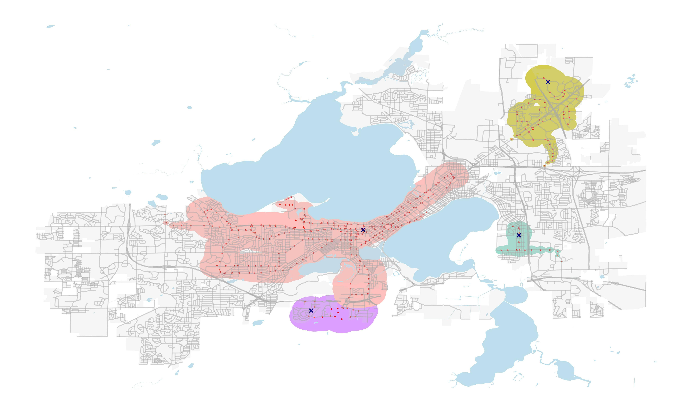
Figure: Area Coverage at 12:00 Starting at Several Stops
In this map, we can see the area covered at different starting bus stops. Each X on Figure 4 once again represents a starting stop. There are 4 starting points here, where one is near the center, one is South of Madison, and the 2 others are on the East. Note that aside from the central stop, Megan concluded that these general areas have a low level of service indicated by their possible farthest distance travelled assuming no transfers. This simulation was done starting at 12 o clock noon for 30 minutes.
We can see that starting at the central stop by far leads to the highest area coverage. In fact, the area coverage from the central stop is more than the sum of the other 3.
The area covered in 30 minutes is quite low for the any stop other than the central. The area coverage is low enough to where people may decide to just walk from one place to another. In the case of spontaneous travel, for people near these stops, the bus system may not be an efficient way of travelling, especially not for long distance travel.
To conclude, Megan’s analysis did accurately reflect the areas which are underprovided in the bus service. The benefit of using the simulator here is that we were able to better quantify as well as visualize the difference in the level of service between each area.
Which Areas are Under and Overprovided in Regards to the Bus Transit Service Level?
We want to determine bus stops and routes that need to changed, especially in regards to location. Here, we divided Madison to its individual wards and analyzed the level of bus service in each ward. Every ward has unique features such as average income levels, population density, racial composition, and average age.
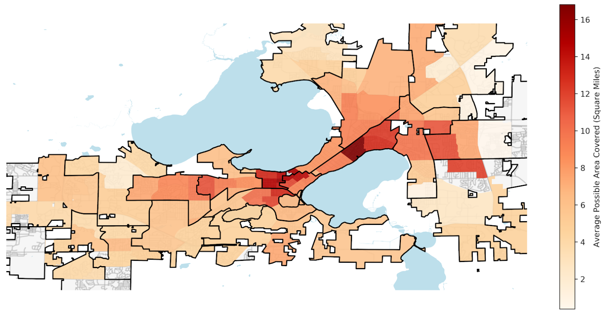
Figure: Average Area Covered for Each Ward
Here we can see the level of bus service provided in each Ward and in this case we used the average possible area coverage in 30 minutes time as an indicator of the level of service for each ward. The boundaries for each aldermanic district are shown on the plot.
As there are many possible starting stops within each ward, we simulated the area covered by each of those stops and took the average for each ward. To account for fluctuations with area coverage over time, we simulated this process over 3 starting times and took the highest for our final area coverage value. We can see that starting the central area of Madison generally leads to a higher area coverage, meaning that they have a higher level of service there. This makes sense since there is a high density of people, most of whom are likely students or workers, which means demand is also higher.
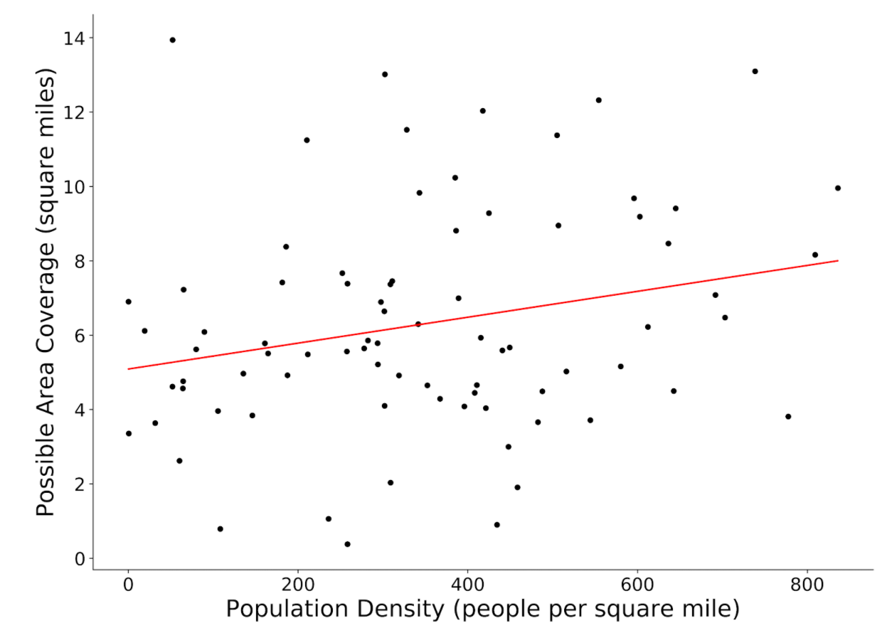
Figure: Population Density against Average Area Coverage
Here we analyzed the relationship between Population Density and the Average Area Covered in Madison. Each point on the plot represents a ward in Madison. As we can see here, while there appears to be a slight positive correlation, the spread on the data is quite large.
In Jared Walker’s book about Bus transit, he mentions that the goal of a bus system has 2 extremes, and these are maximizing either ridership or coverage. If the Madison bus system was entirely focused on coverage, we would see that the possible area coverage on the plot above would be relatively horizontal. If instead the goal was to only maximize ridership, there wouild be much less spread and perhaps a clearer correlation between population density and the area coverage. The main takeaway from this plot is that Madison’s Metro bus system does not focus entirely on one extreme but rather a combination of maximising ridership while ensuring that a similar service is provided in less populated areas.
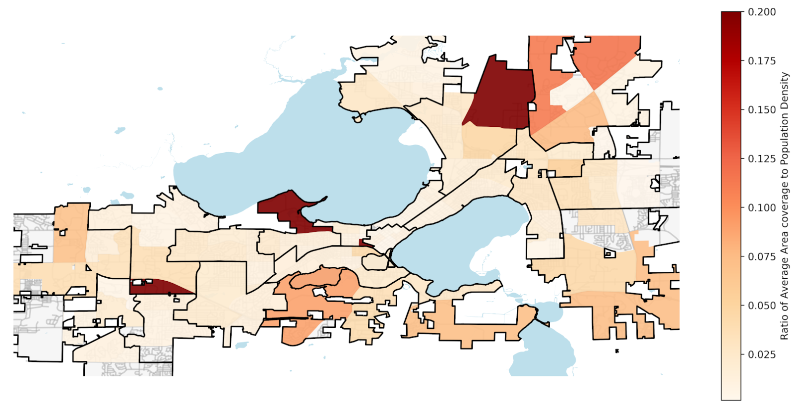
Figure: Area Coverage to Population Density Ratio
The map above is a visualization for the previous scatterplot. Each ward is assigned a value of its average coverage against population density ratio, we can also see that the black outline divides Madison to its aldermanic districts. While there is no clear trend here, we can see that the ratio of average area coverage to population density varies from as low as 0.025 to almost 0.2.
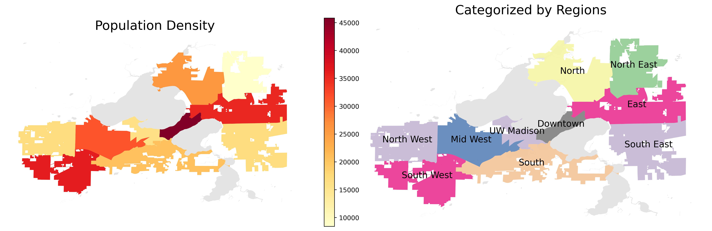
Figure: Population with respect to Regions
As the above figure shown, we categorized the City of Madison by locations. There are 3 in the West and East, 1 in the North and South, Downtown, and UW-Madison.
In doing so, it allows for a more efficient estimation and we can more clearly identify the area that has over/under-provided level of service.
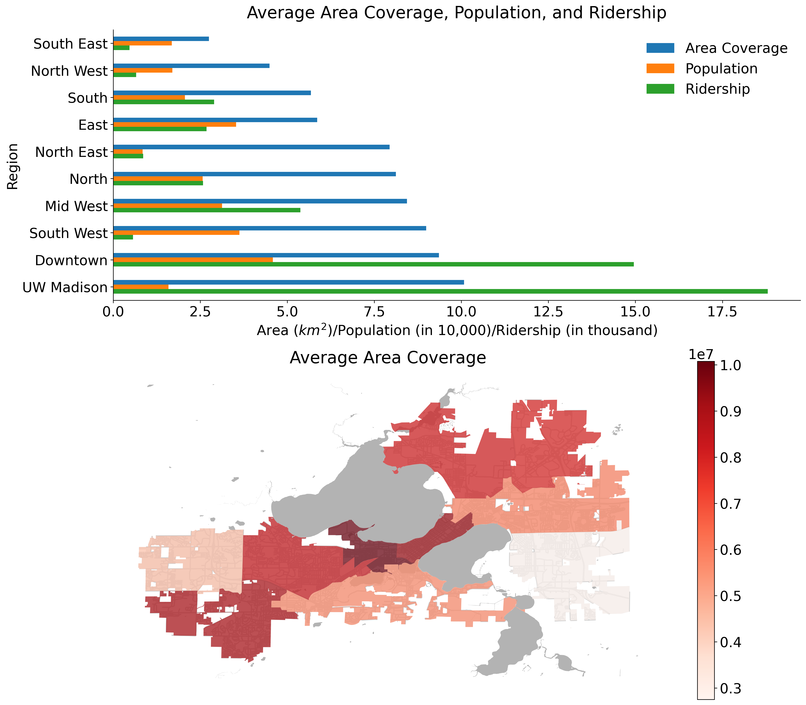
Figure: Overall Views of Service Level based on Regions
Looking at the Average Area Coverage, Population, and Ridership bar figure, the region names are sorted by Area Coverage ascending from top to bottom.
Three interesting cases observed above are the North East, the UW Madison and the South West areas:
The North East area has the lowest population among all regions, and is very low in ridership, but a relatively high average area coverage throughout the day.
In UW Madison, despite less population, it has the highest number of ridership and average area coverage. This makes sense because many students and staffs commute via the metro transit during the school season.
Finally, although both the average area coverage and population are rather high in the South West, in comparison to other regions, it has a very low amount of ridership, and we could infer that the residents in this area drive more often than taking buses.
In general, the West regions have higher area coverage over the East; however, this sounds right to me because both population and ridership in the West is higher than the East, and the same thing works for that in Downtown, which has the highest population and the second highest ridership.
Future Prospects of the Project
- Inserting bus delays and measure the impact
- Remove each route and compare the impact
- Enable planned trip simulation
- Measure important services reachable besides area coverage
- Provide a simple interface for adding/removing routes or stops
In the future, we can add more features to better measure the bus system. To better simulate the real world, we can insert bus delays into the system and measure the impact. We can also make our simulated riders “smarter” and “plan” for their trip to avoid unnecessary waits at a bus stop.
Besides the general area coverage metrics, we can also measure the important services reachable such as grocery store and dentist. Finally, we can provide a simple interface for researchers to add or remove routes and stops so they can quickly compute metrics against their proposed routes.
Final Report
Madison Metro Accessibility Analysis
Andy Lin lin383@wisc.edu
Jeremy Michael jmsusanto@wisc.edu
Ray Hsieh yhsieh36@wisc.edu
Chang Xu cxu249@wisc.edu
Motivation:
There are many routes in the City of Madison. Because of this, the metro transit system will be complex; with such complexity, it is possible for some routes to be redundant, and some area may be underserved.
Therefore, we aim to identify the areas with over-provided metro service while improving the accessbility of the underserved areas.
Introduction to Madison Metro Transit
In Madison, the route network focuses on hubs at the Capitol Square in downtown Madison and four major transfer points in outer parts of Madison.
How Does Madison Metro Transit Do, Comparing With Wisconsin State and The U.S.?
From the left plot, we observe that Madison Metro Transit has a higher volume of ridership (more specific term, unlinked passenger trips) than the average of WI as well as that of the US. This makes sense because Madison is the second largest city as well as one of the busiest city in Wisconsin State.
Ridership in Madison also fluctuates more than others because school seasons affect the number of boardings. In WI overall, ridership is 6.7% lower in July than in January on average; whereas in Madison, ridership is 26.4% lower.
On January 30th, 2020 was when WHO informed the world about the outbreak, and March 11th was when quarantine started. These two factors both contributed to the decreasing trend.
The number of ridership in Madison reached a peak of 1,278,838 in February; nonetheless, dropped drastically to a troughs of 110,054 in April. COVID-19 has especially affected Madison ridership;
WI and US have seen 69.56% and 69.51% declines from February through April respectively; however, Madison itself has seen a 91.39% decline.
Accessibility to Metro Transit in terms of Land Use
According to city of Madison open data, The city of Madison is categorized into 5 zoning districts, that are, Residential districts, Commercial and Mixed-Use districts, Employment districts, Downtown and Urban districts, and Special districts. Each zone is an area that has a set of regulations and differs from other zones.
For more details of each zoning districts, click me.
Which District Has Higher Accessibility To Metro Transit with respect to Distance?
The plot on the left shows the averages of distance to the nearest bus stop. It’s clear that Downtown and Urban and Commercial and Mixed-Use (a type of a commercial property that includes both commercial and residential space) districts have better access in terms of distance to metro transit because these are the places that people tend to visit more often. However, Residential districts, Employment districts, and Special districts (special-purpose governmental units) have the higher averages of distance to the nearest bus stop because these districts are located in a more suburban, countryside area.
The plot on the right identifies the average number of routes available within the distance of 5-minute walk (1/4 miles, 400 meters) for each randomly generated rider. Downtown and Urban districts is one of the major transfer points and many buses travel through, thus, more accessibility to more routes within the range. Whereas other districts have an average of 2 to 4 options to routes that one can take.
Which District Has Higher Accessibility to Metro Transit in terms of Time Spent?
Above plots show the average of how fast a rider can board a bus from one of the bus stops in the distance of 5-minute walk. Observed that, on a weekday, the waiting time, seems to be similar to one another except for the Commercial and Mixed-Use district that has slightly less waiting time, if not taking downtown districts into account.
Note that the cause of the increasing waiting time on Weekday is that there are stops at the outskirts of Madison that only belong to certain routes that run exclusively on weekends, or in the afternoon-evening time.
Surprisingly, the average waiting time during rush and off-rush hours throughout the week does not vary much. Thus we could conclude that residents in the City of Madison enjoy very high level of service.
Simplified Assumptions:
Measures of Productivity in the Transit Industry
How productive is Madison’s Metro Transit System?
The productivity of a business or a system is measured in the context of its outputs and its costs. In the private sector, the outputs can be easily defined by factors such as revenue and growth. However, in the context of the public sector, as the main motive is almost never to maximize revenue and profits, it becomes more complicated. There are two main ways to approach the output of a public transit system: A supply side and a demand side output. There are some key questions we want to answer in this section:
Supply Side Outputs
A supply-side output concept measures the amount of service that is made available, regardless of how much is actually consumed [1]. This includes measurements of Vehicle Revenue Miles (VRM) and Vehicle Revenue Hours (VRH). VRM is a measurement of the miles that vehicles travel while in revenue service. The measure excludes miles that vehicles travel for deadhead services (leaving or returning to the garage or yard facility, changing routes, or when there is no expectation of carrying revenue passengers), operator training, maintenance testing, and school bus and charter services [2]. VRH is similar to VRM, but is measured in time of service rather than its distance travelled.
Vehicle Revenue Miles
Frequency of Bus Routes
Frequency is defined as the number of bus trips in the same direction of travel within a specified time period, and is commonly expressed in trips per hour. It is not only a key measurement of the level of service of transit, but it is also relatable to the general public as it can be easily converted into average waiting time between buses.
There are two types of frequency: by Route or by Stop. Firstly, we want to see how our Bus Transit service varies over a day, and we achieve by observing how route frequency changes over a typical weekday and weekend.
The figure above shows the aggregate route frequency at an hourly interval over the day for both a Weekday and Weekend. It can be observed that the Transit service starts at 4:00 AM for both weekdays and weekends. The level of service during a weekday evidently higher at every time of the day, but this is especially true from around 8:00 AM to 6:00 PM. There are also clear peaks of frequency during the weekday, at the 8:00 to 9:00 AM interval and the 4:00 to 6:00 PM interval. These are often times when people are either going to work or going back home from work. An increased demand of transit service is met with an increase in the level of service itself. This brings up the question: are there any other intervals of time during the day in which high demand is met with low levels of service, or vice-versa? This could be an area of focus in the future, but it will be rather difficult to achieve without hourly ridership data (an indicator of transit demand).
Next, we want to see how our Transit service is spread over the different areas in Madison.
Frequency of Bus Stops
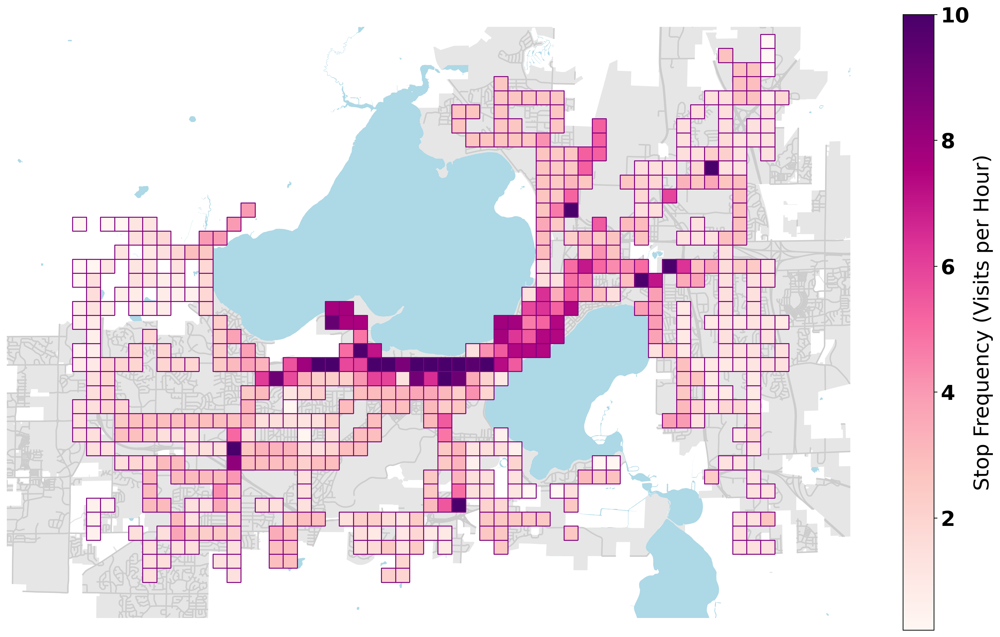
The figure above shows the average stop frequency across each square region, where each square represents a 0.25 X 0.25 mile square area, or 5 minutes walking from one corner to adjacent corners. Since this is the average stop frequency, we have already accounted for the number of stops in each square area. We can see that UW Campus area generally have stops with higher frequency at over 5 trips an hour. There are other notable areas such as East Towne Mall and West Town Mall and the Dane County Airport which has a notably higher frequency especially compared to its adjacent squares.
From a supply side output, we were able to evaluate our transit service relative to other bus transit services and also get an idea of the level of service we provide over a day. However, it is just as important to consider demand side factors, and we achieve this with ridership data. This is important because we want to analyze all the stops as well as the time of day and observe whether there is high demand is met with low levels of service, or vice-versa.
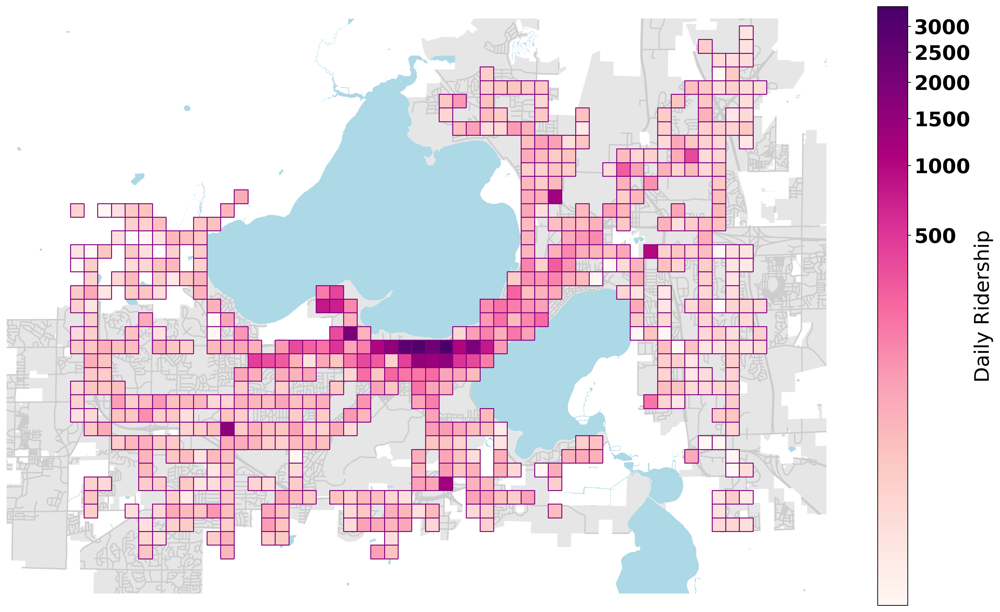The figure above shows the daily ridership values in each square region. In each square, the daily ridership of each stop inside the area is added to arrive at this value. Note that the colorbar on the right is shown on an exponential scale. From this figure, we observe that every square region away from the Madison Campus Area has relatively even ridership values, at least relative to the square areas in the Madison Campus area. In the central area, many of the squares show the ridership value of over 500 passengers on a typical weekday. It is worth noting that the three highest frequency routes , which are the 80, 2 and 6, all have stops on those high ridership areas.
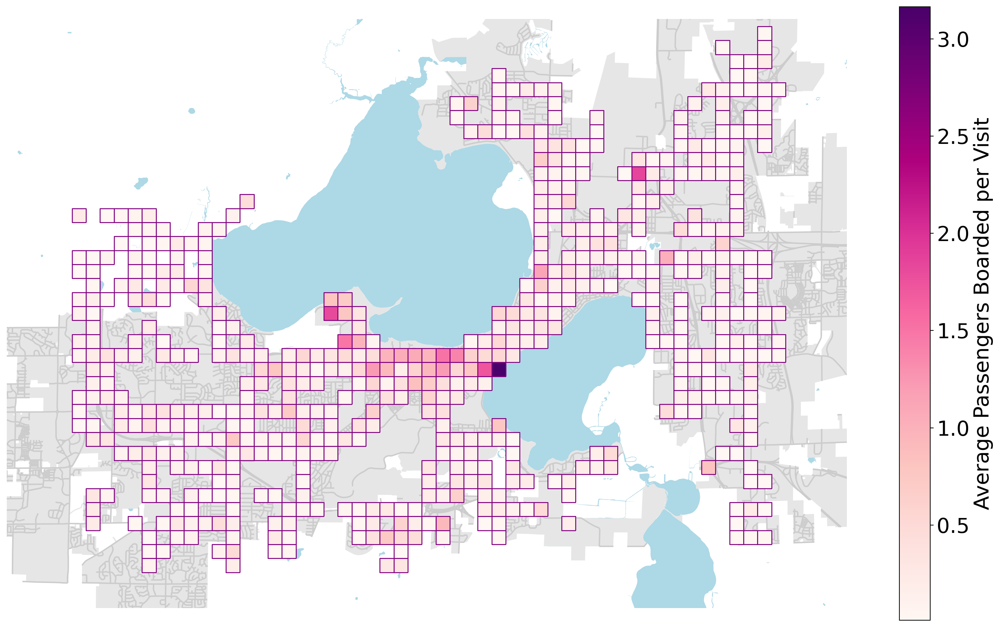Finally we combine to stop frequency and ridership to get an idea of how well our service meets its demand.
The figure above takes the ratio of Daily Ridership to the total number of visits to a stop per day. The values of this ratio for each stop are then averaged across other stops within the same square area. This ratio is the equivalent of the Average Passengers Boarded each time a stop in the square area is visited. We can see that there isnt the same discrepancy that we saw in the previous two plots. However, there are still the same trends we saw where the UW Campus area generally have higher Average Passengers Boarded per Visit. It is difficult for us to make a proposal to reduce or increase certain stop frequencies as we are lacking the demand side data at an hourly level. Optimally, if we are able to get data on ridership values at an hourly level from all the stops or routes, then we would be more comfortable in proposing changes to the frequency of the current system, and these would likely be changes at a more hourly level rather than daily since the demand for transit varies over a day.
While frequency may provide insight on the level of service of the bus system, it has some inherent flaws. It indicates the number of buses that comes to a stop within some time interval, but each bus travels difference distances at different speeds. In other words, the coverage of each bus stop is not the same. Therefore, the frequency of each bus stop may also not be the most suitable metric to measure the supply side output. Instead, to compute a more useful metric, the area coverage within some time interval, we came up with a metro bus simulator.
Madison Metro Simulation
Brief Explaination of Our Simulator
To get a realistic result, we find that creating a simulator will be a convenient and the easiet way to get various metrics for assisting our analysis, since it simulates what people actually will do.
By creating that, we can also interpolate the simulation result with the population data to know which area is well-serviced and under-serviced. The residents of an area may be well-serviced if taking the buses will not bring too much inconveniences to them, vice versa.
Processing Steps of the Simulator
First, the simulator takes in parameters such as starting time, the plan of the stops, etc, to generate a graph, representing the possible trips within a certain time frame.
Then, a graph will be generated. The nodes represent the static events at a moment, such as a bus arrives at some stop; the edges represent the dynamic events between stops. These dynamic events can be either walking or taking the buses.
After the graph generation, the possible paths will be returned and ready for the further analysis.
Performance of the Simulator
Here’s the overview of the simulator.
As we can see, the data loading time is almost a constant, which makes sense, since the data size will not change.
The graph generation time is slightly close to exponential, since the possibilities grows exponentially according to the simulation time i.e. the trip time simulated.
The optimizations were done mostly during the graph generation.
There are a few optimizations we have done. The most significant one we have done is to implement a pruning algorithm. If we found a detouring path or a cyclic path, we prune it.
This saves us ~5000x performance (will be different by adjusting the pruning policy), because this cut off many possible non-sense paths and prevent them from generating more possibilities, such as a person going circle 3 times to reach their destination.
Area Coverage for Different Times of Day
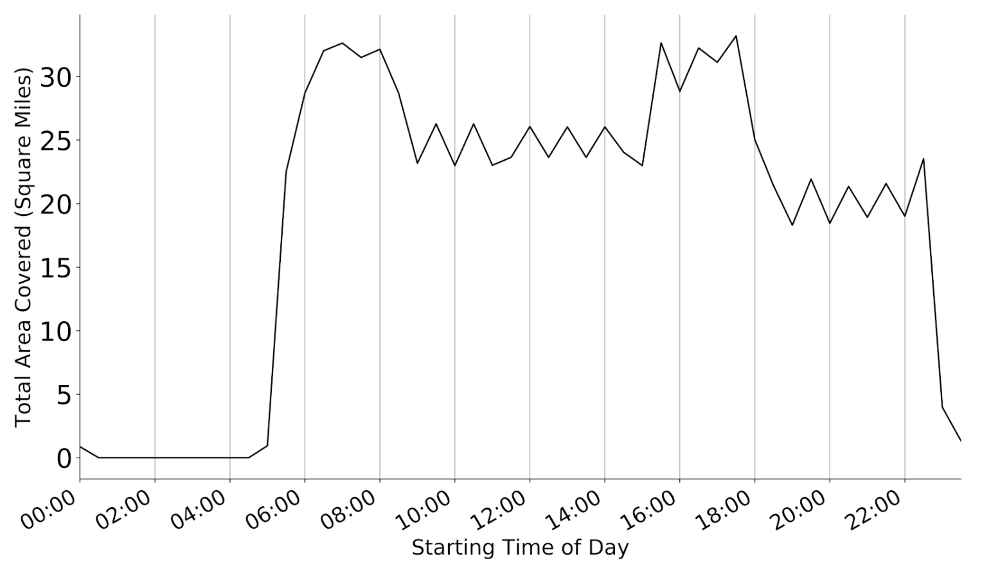
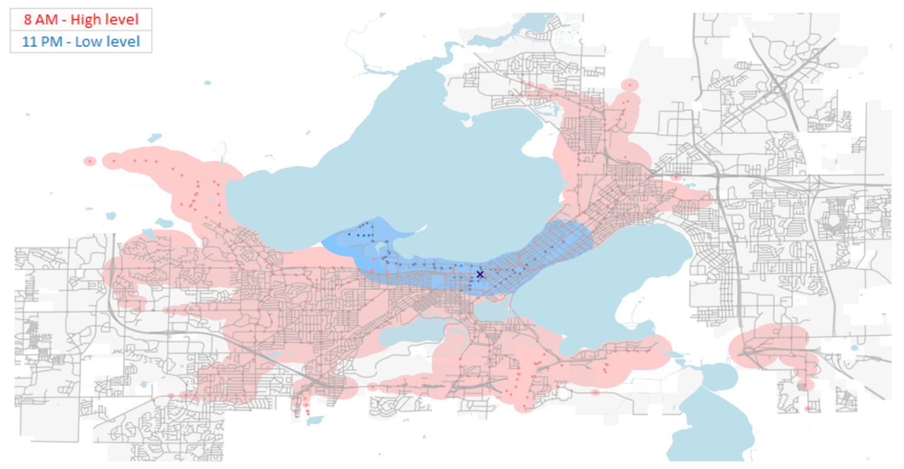Analyzing Previous Stops Determined to be Inefficient (From a prior analysis by Megan Tabutt)
In the prior analysis, Megan Tabutt concluded that stops in certain areas have a low possible farthest distance travelled assuming no transfers. While this metric may be able to indicate whether a stop is efficient or inefficient, we want to observe how these stops behave in regards to their area coverage. In other words, we compare the area coverage when starting at a centralized stop and starting at at a possible inefficient stop.
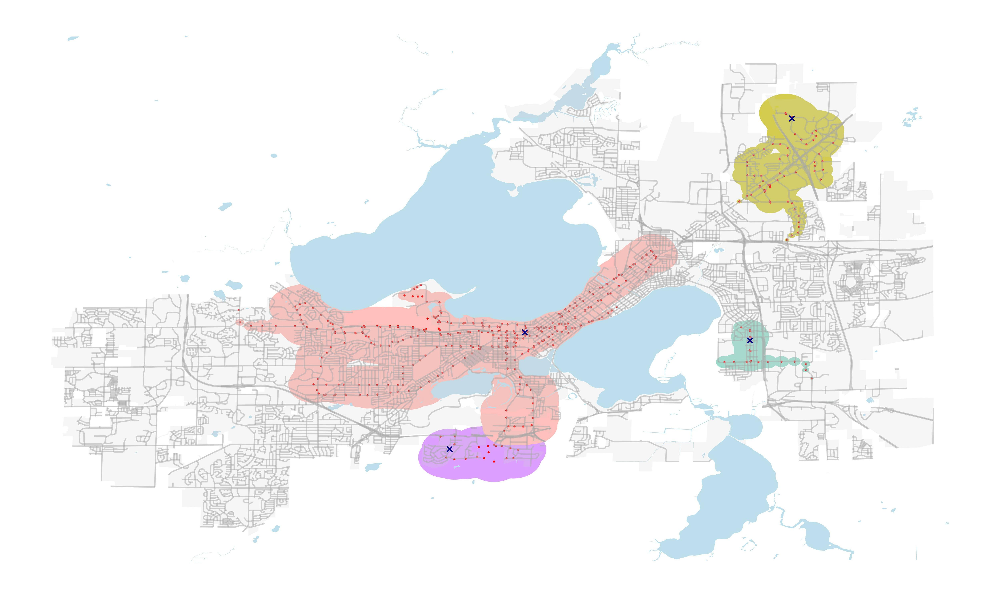In this map, we can see the area covered at different starting bus stops. Each X on Figure 4 once again represents a starting stop. There are 4 starting points here, where one is near the center, one is South of Madison, and the 2 others are on the East. Note that aside from the central stop, Megan concluded that these general areas have a low level of service indicated by their possible farthest distance travelled assuming no transfers. This simulation was done starting at 12 o clock noon for 30 minutes.
We can see that starting at the central stop by far leads to the highest area coverage. In fact, the area coverage from the central stop is more than the sum of the other 3.
The area covered in 30 minutes is quite low for the any stop other than the central. The area coverage is low enough to where people may decide to just walk from one place to another. In the case of spontaneous travel, for people near these stops, the bus system may not be an efficient way of travelling, especially not for long distance travel.
To conclude, Megan’s analysis did accurately reflect the areas which are underprovided in the bus service. The benefit of using the simulator here is that we were able to better quantify as well as visualize the difference in the level of service between each area.
Which Areas are Under and Overprovided in Regards to the Bus Transit Service Level?
We want to determine bus stops and routes that need to changed, especially in regards to location. Here, we divided Madison to its individual wards and analyzed the level of bus service in each ward. Every ward has unique features such as average income levels, population density, racial composition, and average age.
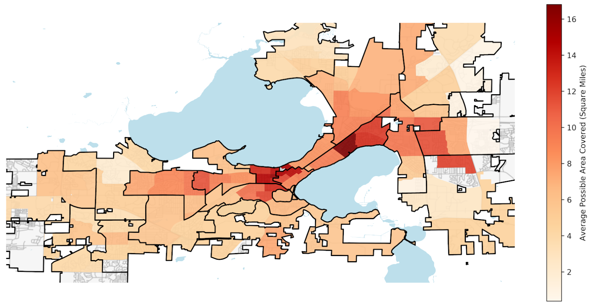Here we can see the level of bus service provided in each Ward and in this case we used the average possible area coverage in 30 minutes time as an indicator of the level of service for each ward. The boundaries for each aldermanic district are shown on the plot.
As there are many possible starting stops within each ward, we simulated the area covered by each of those stops and took the average for each ward. To account for fluctuations with area coverage over time, we simulated this process over 3 starting times and took the highest for our final area coverage value. We can see that starting the central area of Madison generally leads to a higher area coverage, meaning that they have a higher level of service there. This makes sense since there is a high density of people, most of whom are likely students or workers, which means demand is also higher.
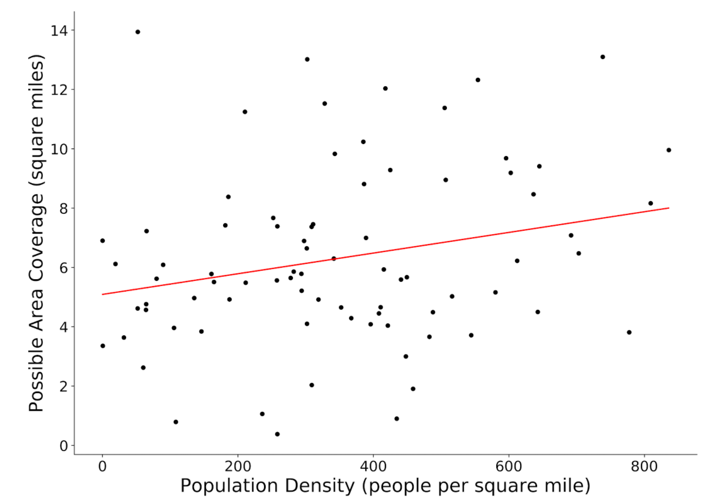Here we analyzed the relationship between Population Density and the Average Area Covered in Madison. Each point on the plot represents a ward in Madison. As we can see here, while there appears to be a slight positive correlation, the spread on the data is quite large.
In Jared Walker’s book about Bus transit, he mentions that the goal of a bus system has 2 extremes, and these are maximizing either ridership or coverage. If the Madison bus system was entirely focused on coverage, we would see that the possible area coverage on the plot above would be relatively horizontal. If instead the goal was to only maximize ridership, there wouild be much less spread and perhaps a clearer correlation between population density and the area coverage. The main takeaway from this plot is that Madison’s Metro bus system does not focus entirely on one extreme but rather a combination of maximising ridership while ensuring that a similar service is provided in less populated areas.
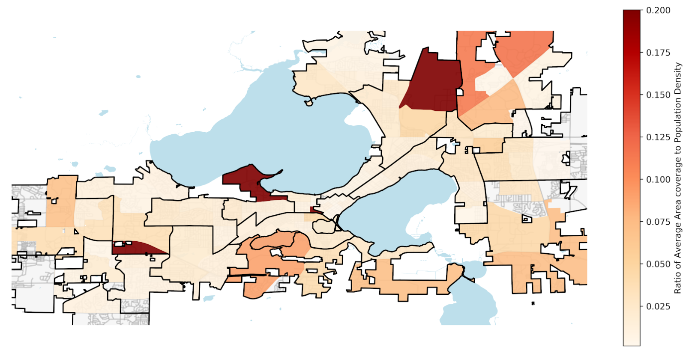The map above is a visualization for the previous scatterplot. Each ward is assigned a value of its average coverage against population density ratio, we can also see that the black outline divides Madison to its aldermanic districts. While there is no clear trend here, we can see that the ratio of average area coverage to population density varies from as low as 0.025 to almost 0.2.
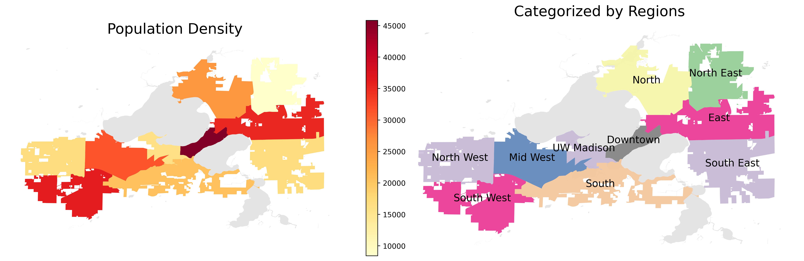As the above figure shown, we categorized the City of Madison by locations. There are 3 in the West and East, 1 in the North and South, Downtown, and UW-Madison.
In doing so, it allows for a more efficient estimation and we can more clearly identify the area that has over/under-provided level of service.
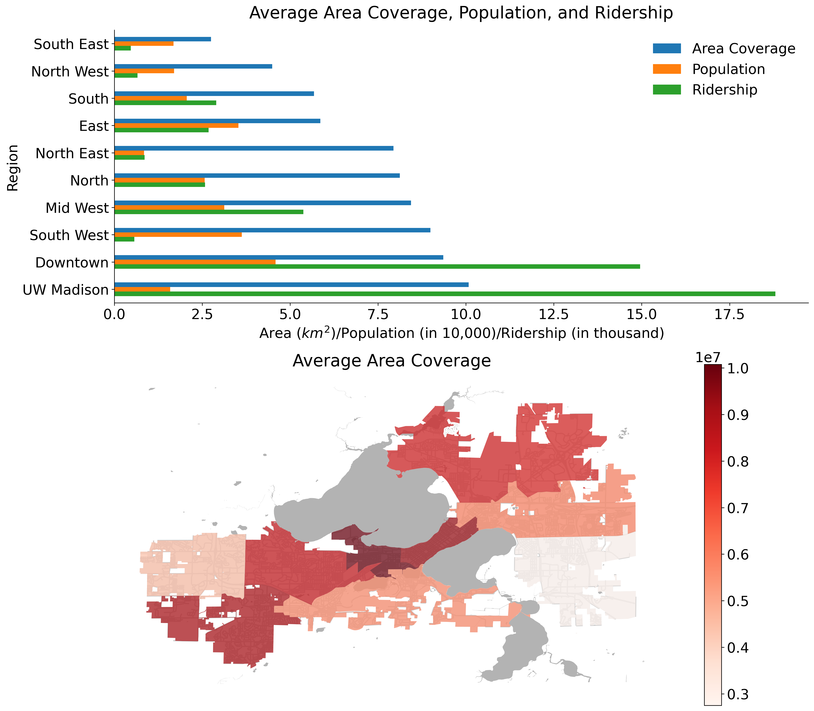Looking at the Average Area Coverage, Population, and Ridership bar figure, the region names are sorted by Area Coverage ascending from top to bottom.
Three interesting cases observed above are the North East, the UW Madison and the South West areas:
The North East area has the lowest population among all regions, and is very low in ridership, but a relatively high average area coverage throughout the day.
In UW Madison, despite less population, it has the highest number of ridership and average area coverage. This makes sense because many students and staffs commute via the metro transit during the school season.
Finally, although both the average area coverage and population are rather high in the South West, in comparison to other regions, it has a very low amount of ridership, and we could infer that the residents in this area drive more often than taking buses.
In general, the West regions have higher area coverage over the East; however, this sounds right to me because both population and ridership in the West is higher than the East, and the same thing works for that in Downtown, which has the highest population and the second highest ridership.
Future Prospects of the Project
In the future, we can add more features to better measure the bus system. To better simulate the real world, we can insert bus delays into the system and measure the impact. We can also make our simulated riders “smarter” and “plan” for their trip to avoid unnecessary waits at a bus stop.
Besides the general area coverage metrics, we can also measure the important services reachable such as grocery store and dentist. Finally, we can provide a simple interface for researchers to add or remove routes and stops so they can quickly compute metrics against their proposed routes.